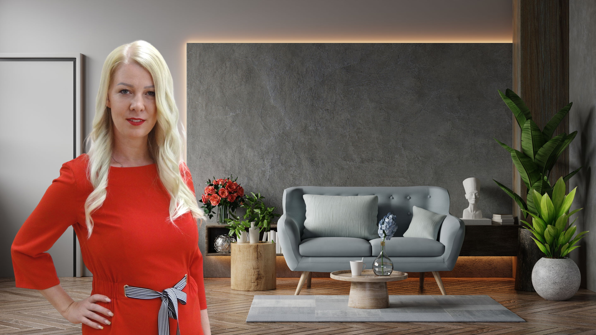
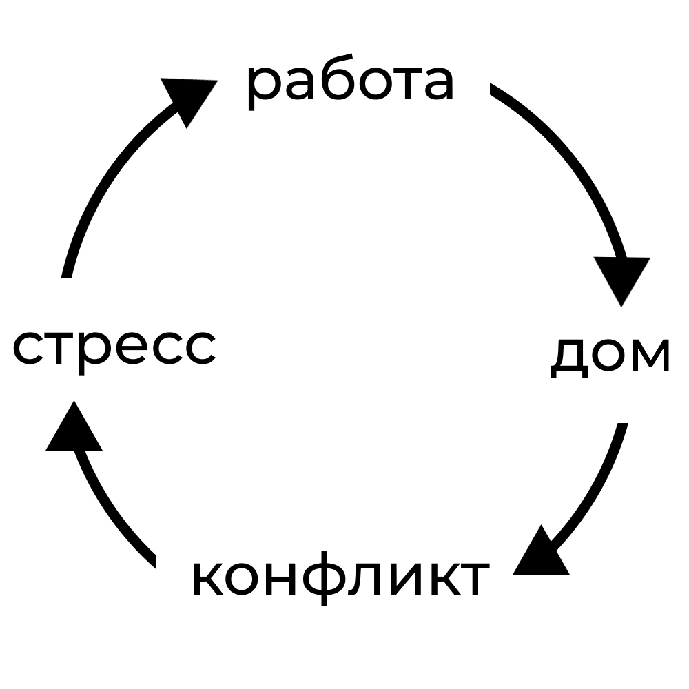

Моя деятельность
RPT-терапия.
Терапия отправных точек позволяет проработать конфликт на уровне эмоции, чувств и инстинктов, чего не дает классическая когнитивно-поведенческая (CBT) терапия. Достаточно четырех сеансов для нахождения и устранения корня травмы, c которой и начались все проблемы (ложь, обиды, измены, гнев, конфликты в целом и др.). Метод позволяет проработать любой из запросов клиента (секс, деньги, здоровье, отношения, зависимость и др.).ЭОТ-терапия.
Эмоционально-образная терапия - направление, основная идея которого состоит в том, что негативное эмоциональное состояние может быть выражено через зрительный, звуковой или кинестетический образ. С помощью этих образов, в совместной работе с клиентом, я анализирую причины, приведшие к возникновению хронического негативного эмоционального состояния, а затем помогаю клиенту преобразовать негативное состояние в позитивное, мысленно воздействуя на соответствующий образ. Простыми словами - помогаю с зажатыми эмоциями, чувствами, позволяю их снова прожить, выводя тем самым из зажатого состояния, агрессивного, депрессивного и др. Это работает при любых психических расстройствах личности.RFT-терапия.
Терапия Радикального прощения разработана Колином Типпингом. Она состоит из пяти простых этапов и подходит для исцеления взаимоотношений, избавления от гнева и чувства вины, нахождения взаимопонимания в любой ситуации, её используют тысячи психологов, однако, в совокупности с вышеперечисленными методами она даёт возможность получить более качественный результат.CBT-терапия.
Когнитивно-поведенческая терапия, это когда Вы работаете с терапевтом, чтобы выявлять и ставить под сомнение любые негативные модели мышления и поведения, которые могут быть причиной ваших трудностей. В свою очередь это может изменить то, как вы относитесь к ситуациям, и даст вам возможность изменить свое поведение в будущем.Эксперт по межличностным отношениям и конфликтам.
Работаю с организационно-управленческими, социально-психологическими и личностными типами конфликтов, помогаю выстраивать стратегии и тактики по их разрешению, провожу переговоры, направленные на преодоление возникших конфликтов.Автор упражнения "Негативное мышление".
Уникальное упражнение, которое совмещает в себе возможности проработки инстинктов и выработанных рефлексов человека, а не только эмоции. В сравнении с другими методами в психологии вы работаете над чувствами и эмоциями. Этот метод способен помочь Вам разорвать цепочку реакции, которую Вы давали ранее и создать буквально за одну встречу иную матрицу мировоззрения.Духовный практик (личные и групповые медитации).
Понятие медитация каждый понимает по-своему. Для меня это истинный способ не только успокоения ума, но и нахождения ответов, которые спрятаны глубоко внутри нас. Со мной мои участницы находят ответы, в чём они не виноваты, в чём их сила, слабость, куда и как им идти. Медитация является неотъемленной частью моей жизни и со мной с тех пор, когда в нашем маленьком посёлке такого слова даже не слышали. У меня есть возможность учить медитированию тех, у кого ранее это не получалось.Практик в двух реабилитационных центрах г. Череповца (работа с зависимостями).
Я пришла в реабилитационный центр лишь в готовности понять истинную причину: почему у человека возникает зависимость - сексуальная, алькогольная, наркотическая, пищевая. Именно в ребцентре я поняла, Для того, чтобы помочь человеку с завимимостью, нужно его любить, соединиться с ним ментально, проникнуться им. Нужно понять и пойти вместе с ним в его боль. Я веду именно так. Никто не готов соприкасаться с этим. Никто не спрашивает почему Вы: пьёте, изменяете, переедаете.Лидер в сообществе "PRO_женщин".
Лидерство для меня - в первую очередь ответственность, она у меня в крови. За отсутствием детства, кроме как развития в себе лидерских качеств я больше ничем не занималась. Имея достаточно ресурса, времени и желания я вступила в сообщество, взяла под крыло 20 женщин и веду их к цели. Цели у всех разные, от финансов до отношении, и знания психологии помогают при постановке своих целей и устранении навязанных, в этом могу быть полезна и Вам. Возрастная категория 12+.Независимый партнёр в компании LR Health & Beauty (здоровье и красота).
Компания LR помогает мне в профессиональном плане с той точки зрения, что мы не только душа, но и физическое тело. Компания LR совместно с ведущими профессорами России и Европы показывает челоека с точки зрения строения клеток, поясняя на простом уровне — если в вашем организме не хватает микроэлементов, витаминов, симбиотиков, макро- и микронутриентов у человека начинают развиваться заболевания, в том числе и психические. Яркий пример: в отсутствии Омега-3 нервная система человека истощается и организм полностью даёт сбой. Таким образом, если не принимать Омега-3, к психологу можно ходить бесконечно. Продукция компании LR мною выбрана за качество.Консультации
Семейная
Если ваша семья подразумевает кошмар, то это для Вас.
Стоимость:
3200 ₽
2600 ₽
Индивидуальная
Полезна буду тем, кто считает себя безнадёжным.
Стоимость:
2800 ₽
2400 ₽
Подростковая
Тем, кто проживает острый возрастной период в деструктивном поведении.
Стоимость:
2300 ₽
1900 ₽
Онлайн
Связь через интернет такая же глубокая, как и при личной встрече.
Стоимость:
2500 ₽
2200 ₽
Негативное Мышление
Упражнение полезно тем, кто не испытывает чувство счастья и удовлетворения.
Стоимость:
1700 ₽
1400 ₽
Радикальное Прощение
Курс из четырех сессии будет полезен тем, кого трясёт при воспоминании о детстве.
Стоимость:
32000 ₽
28000 ₽
Прайс актуален на 24.10.2022 и может быть изменён.
Как связаться
Как добраться
Моя История
Все мы родом из детства. Моё детство активно подготавливало меня к тому, что я стану экспертом по межличностым отношениям и конфликтам. Именно в далеком детстве, когда мама решит уйти из семьи, и слезы трехлетней меня не изменят принятого ею решения; именно в том детстве, где отца я видела трезвым всего несколько раз за те 12 лет, что жила (точнее, выживала) с ним, — будет учиться на ошибках та я, которую вы видите на фото выше. Я с детства не имела понятия: — что такое семья? — как строить отношения? — как зарабатывать деньги? — как заводить друзей? — как избавиться от проблем? — как не попасть в конфликт? — как сделать так, чтобы тебя любили и понимали? — как простить и забыть прошлое? Последний пункт для меня был невыполнимой, как мне казалось, задачей. Все эти ответы пришлось искать самой. Многие думают, что психолог, это человек, который отучился и получил диплом. Однако, это не совсем так, хотя и диплом немаловажен. Хороший психолог — кто сам прошёл путь исцеления, кто обладает сверхэмпатией (мне она всегда мешала раньше), у него развита интуиция, кто следует этическому кодексу психолога и, самое главное — это тот, кто остаётся самим собой. Так кто же я настоящая? Девушка, что прошла путь детства от притона до детдома: обладающая прозаичным умом, прогрызающая себе дорогу вперед, в стремлении понять: «Как исправить то, что не успели родители, чтобы не передать этого своим детям?». Я нашла ответ на этот существенный вопрос, когда моему собственному ребенку было 9 месяцев. Находясь в токсичных отношениях, я искала «выход». Я понимала, что я живу, но «картинка не менялась»:

Этот круг был разорван методом Радикального Прощения, в котором я останусь уже профессионально. В дальнейшем, собрав воедино методы семейной психологии, когнитивно-поведенческой терапии, терапии радикального прощения, эмоционально-образной терапии и терапии отправных точек я сама создам то, что из глубины сознания помогает людям и семьям решать следующие вопросы: — холод в отношениях — непонимание — обиды — обман — тайны — измены — недосказанность — несправедливость — конфликты из-за финансов, детей, родителей. Так я стала экспертом по межличностным отношениям и конфликтам. Прежде всего, навсегда прекратив их во втором браке, в собственной семье. Далее, я занималась частной практикой в центре города и менее, чем через год, во мне увидела экспертность одна из коллег, которая и пригласила меня практиковать в реабилитационный центр. Так я стала работать с зависимостями, вооружившись методами ЭОТ, РПТ, ТРП и КПТ. Замечая в себе всё больше испытываемого счастья от того, что люди вокруг меня растут, я не могла остановить себя на уровне кабинета, и зарегистрировалась лидером в сообществе «PRO Женщин». Здесь начался внутренний личностный рост, умноженный втрое. Дорогой читатель, перед Вами история женщины, которая смогла трансформировать свою жизнь с самого социального дна; смогла из неуверенного в себе подростка, подвергающегося постоянному буллингу в школах (их было 3) в женщину, что любит и любима. Вернувшись в начало истории - Вы поймёте, что такое понятие, как «женственность» я даже не слышала, тем более не развивала в себе. Однако, со временем, и этот вопрос я смогла для себя решить, и теперь таким же «безнадёгам» я помогаю пробиться в люди, менять свою жизнь, строить цели и идти к ним. Ещё одна неотъемлемая часть моей жизни — сетевой бизнес с немецкой компанией LR, который смог вобрать в себя всё то, что я так давно искала: — позитивных и активных людей, которые умеют дружить — качественный коучинг — доход — путешествия — свободное время Несколько слов об упражнении «Негативное мышление». Переживая моменты, когда слова подруг: «Потерпи», «Время лечит», «Всё пройдёт» — уже не действуют, и ты ложишься спать с негативными мыслями, рождающими страхи и сомнения: «Как жить?», «Чем платить за съёмную квартиру?» (снимала долгих 17 лет), «Как там дочь в садике?» — я понимала, что это нарастающий стресс. Я не для того 12 лет терпела детство, чтобы вот так взять и сдаться. Таким образом, был необходим инструмент, чтобы отключить голову — и я его создала. Именно так и родилось это упражнение, состоящее из двух частей. Подробнее о нём в моей книге «Облачное детство: трансформация через родителей».
Отзывы
Больше информации в сообществе ВКонтакте и на YouTube-канале.